Resume
Curriculum Vitæ
Public Art Commission
2008 - Commission for University library, Bayonne, France .
Achievement of the office desk in massive oak tree
2008 - Commission for school, Linxe, France.
Achievement of a public sculpture
2007 - Installation on the Landhausplatz, Innsbruck, Austria.
Order from the Innsbruck French Institut for the achievement of a sculpture
commemorating the Austrian-French friendship.
2007 - Mont de Marsan Sculpture 7, Mont de Marsan, France.
Order from the town to the achievement of a sculpture on a dead tree.
2007 - 2eme biennale d’¯art contemporain sur le littoral, Anglet, France.
Achievement of two sculptures on the adour river pillars.
2006 - Ospitalea, Irissary, France.
Order from the Conseil General des Pyrenees Atlantique
2005 - University of Pau and Adour, France.
Order for a sculpture in a tree .
Exhibition
- 2009, Organic Art Life, Sarajevska Zima, Sarajevo, Bosnia Herzegovina
- 2008, Nine Dragons Heads, Cheju Island, Republic of south Korea
- 2007, Ferdinandeum Tiroler Landesmuseum, Innsbruck, Austria.-
-2006, Geochang, Republic of south Korea.
- 2006, iufm de Mont de Marsan, France.
- 2005, Duppini, Veliko Tarnovo, Bulgaria.
- 2004, Musee Renoir, domaine des Colettes, Cagnes sur Mer, France.
- 2004, Nine Dragons Heads, Dae Cheong, Republic of south Korea.
- 2003, Musee Bonnat, Bayonne, France.
- 2002, Barrena Kultur Etxea, Ordizia, Spain.
- 2002, Singeorz-bai, Romania.
- 2001, Art-Senat, orangerie des jardins du Luxembourg, Paris, France.
- 2000, Paysage, Carre Musee Bonnat, Bayonne, France.
- 2000, Le musee dans la rue, Mont de Marsan, France.
- 1998, Universite de la Sorbonne, Paris, France.
- 1999, Tranzit, former synagogue, Cluj-Napoca, Romania.
- 1995, San-Telmo museum, Saint Sebastien, Spain.
- 1992, Triange Artist Workshop, Pine-Plain, New-York.
Training et distinction :
Grant : Aide Individuelle a la Creation, Région Aquitaine
Ecole des Beaux Arts de Bordeaux, dnsep
frac Aquitaine, Bordeaux, France.
Christophe Doucet - ancienne distillerie de resine - F40260 Taller
+33 558 89 47 82 - +33 685 75 17 55
contact@christophedoucet.com- www.christophedoucet.com
2009-08-03
sap2009.egloos.com 에서 옮김
Premieres impressions
Bonjour de Séoul ou plus exactement du marché de Seoksu à Anyang pour un programme de résidence artistique de 3 mois. Je partage la vie de ces commerçant et j'habite une échoppe semblable à la leur transformé en atelier d'artiste. Ce marché fait l'objet de la convoitise de promoteur immobilier et l'idée de Monsieur Park chan-eung est de revitaliser ce marché en invitant des artistes.
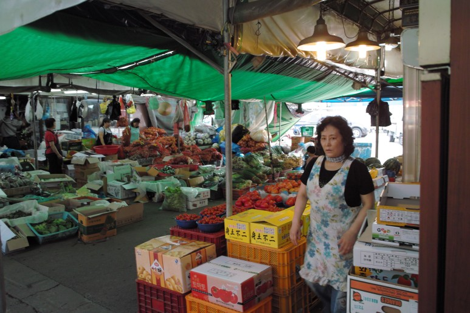
2009-06-22
sap2009.egloos.com 에서 옮김
... par le moyen de nouveaux signes
인간은어떻게 세상에 영향을 미치는가? 새로운기호를 통해서이다.
움베르토 에코: ‘기호’
‘SAP’은 SeoksuArt Project의 영어 약자이다. 또한 아트디렉터 박찬응씨가 말한대로 ‘sap’은 한국어에서 연장 ‘삽’을 가리키고 액을 막고 악귀를 퇴치하는 기능의 제구(祭具)를 지칭하는 말이기도 하고, 영어에서 ‘sap’은 수액을 의미한다. 이처럼 ‘sap’은 다의적이다. 한 단어를 다른 언어로 옮길 때 의미가 소멸된다는 엔트로피법칙과 반대로, SeoksuArt Project는 이 경우 더욱 활성화된다. SeoksuArt Project의목적은 서울 근교에 위치한 안양의 전통시장 주민과 한국인 작가 그리고 해외 입주 작가를 연결하여 예술적 개입을 위한, 니콜라부리오의 말을 인용하자면 관계적 미학을 위한 새로운 경계를 설정하는 것이다.
이 새로운 패러다임을 갖고 어떻게 작업할 것인가? 정치적 성격의 도구를 사용할 수 있겠지만 나는 그보다 언어적도구를 선호한다. 따라서나는 위에서 기술한, SeoksuArt Project = sap = 삽=도구(삽)이라는 기호학적 고리를 이용하고자 한다. 이전 작업의 연장 선상에서 나는 새로운 기호/도구를, 다시말해 동양의 전통적 종이를 재료로 삽 모양의 램프를 제작하고자 한다. 5미터 가량의 이 램프이자 기호이자 도구는 석수 시장의 상징과 같은 것이 될 것이다. – 크리스토프듀셰
Comment l'homme agit' il sur lemonde? Par le moyen de nouveaux signes
(Umberto Eco : Le signe).
SAP est l'acronyme anglais de SeoksuArt Project. Mais aussi comme le dit Park Chaneung, directeur duprojet, 삽(sap)est le nom donné en coréen à une pelle, et aussi à un objet deculte. En anglais sap désigne la sève. Sap est polysémique.Contrairement aux lois d'entropie qui voudraient que d'une langue àl'autre un mot perde de son sens, Seoksu Art Project est icirevitalisé.
Seoksu Art Project à pour objet demettre en relation la population d'un marché traditionnel d'Anyang(banlieue de Séoul) avec des artistes coréens et étrangers enrésidences afin de définir de nouvelles frontières pour desinterventions artistiques, une esthétique relationnelle en quelquesorte pour citer Nicolas Bourriaud.
Comment travailler sur ce nouveauparadigme ? Je pourrais me servir des outils du politique, je leurpréfère ceux du linguiste. Je me servirai donc de la chainesémiotique décrite plus haut : Seoksu Art Project = sap = 삽 = un outil (une pelle) , et dans la lignée de mesréalisation antérieures je propose de fabriquer un nouveausigne/outil, une lampe de papier traditionnelle d'Asie en forme depelle (sap). Cette lampe, ce signe, cet outil de 5 mètres environsera comme l’emblème de Seoksu Market.
Howdo people affect the world? It is through the new signs
Umberto Eco: ‘The signs’
‘SAP’is the English abbreviation of Seoksu Art Project. ‘SAP has a lotof meanings. Art director Park Chaneung says that ‘sap’ means atool, ‘a shovel’ and ‘a ritual tool which keeps the misfortuneout’ in Korean. In English, ‘sap’ refers to ‘a watery liquidin plants and trees’. When we translate a word into otherlanguages, it loses its actual meaning, as is the Law of Entropy.However in the Seoksu Art Project (SAP) case, it is revitalized. Thepurpose of Seoksu Art Project is to connect citizens to traditionalmarkets in Anyang City, with Korean and international artists fromother countries. As referred by Nicolas Bourriaud, ‘it is to definenew boundaries for artistic interventions and aesthetics ofrelationships’.
Howdo we work out with this new paradigm? We could use political tools,but I would rather prefer to use linguistic tools. Therefore, I amusing the semiotic link of signs which I mentioned above: Seoksu ArtProject = SAP = 삽=Tool(shovel). As in my previous work where I used new signs/tools, I willproduce a lamp, which will look like SAP (삽,shovel) with traditional Asian papers. It will be a 5 Meter lantern,or it could be seen as a sign and tool at the same time, becoming thesymbol of Seoksu Market.
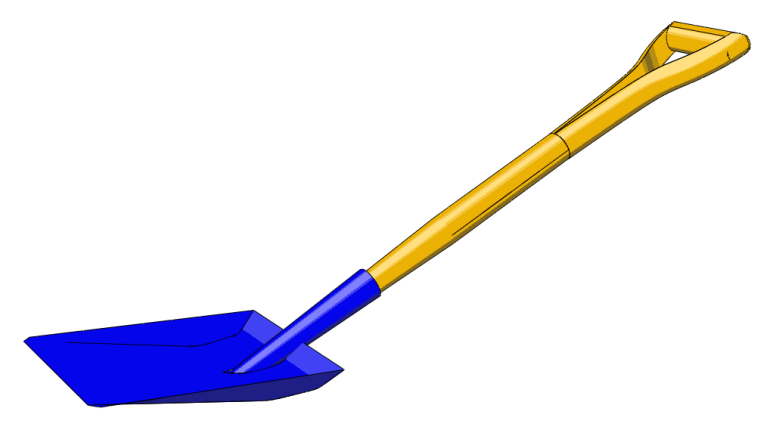
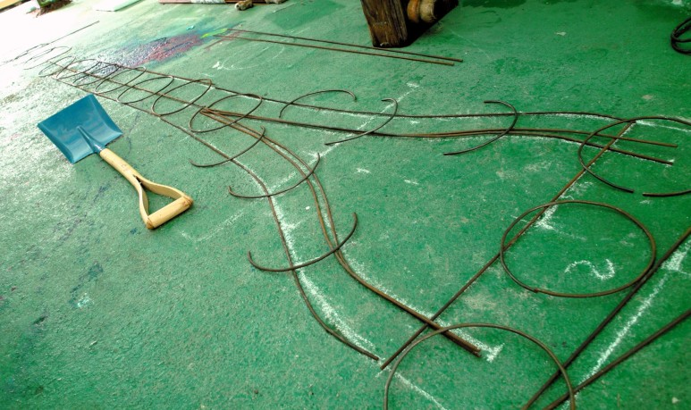
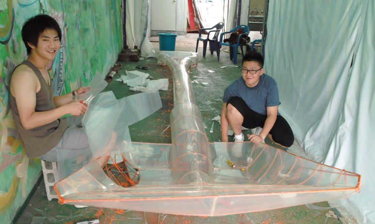
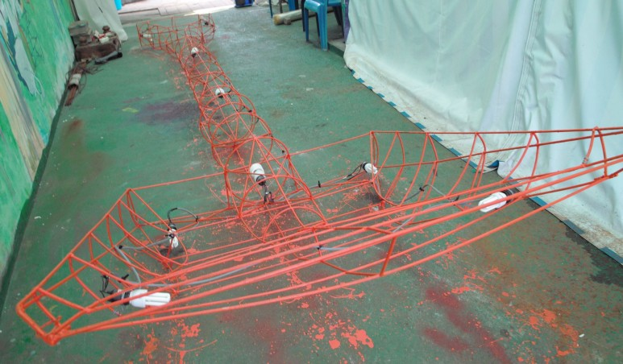
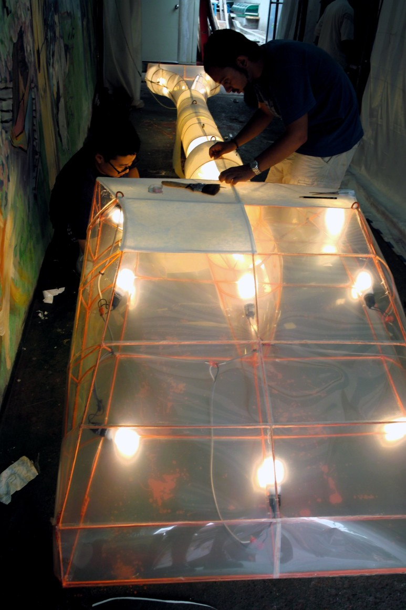
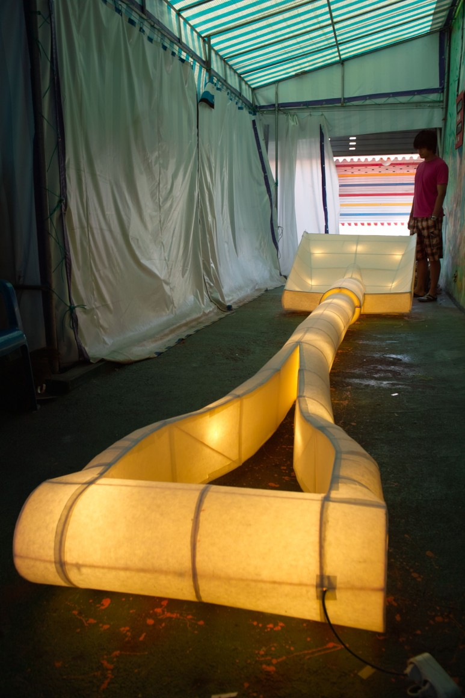
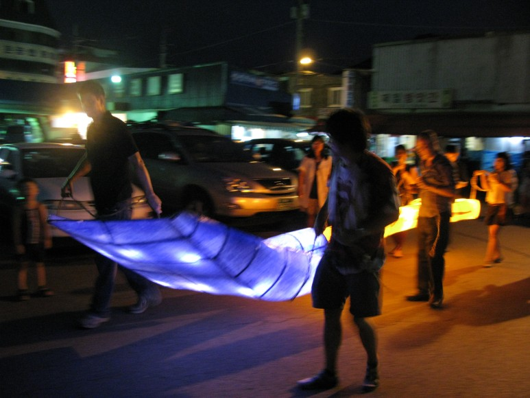
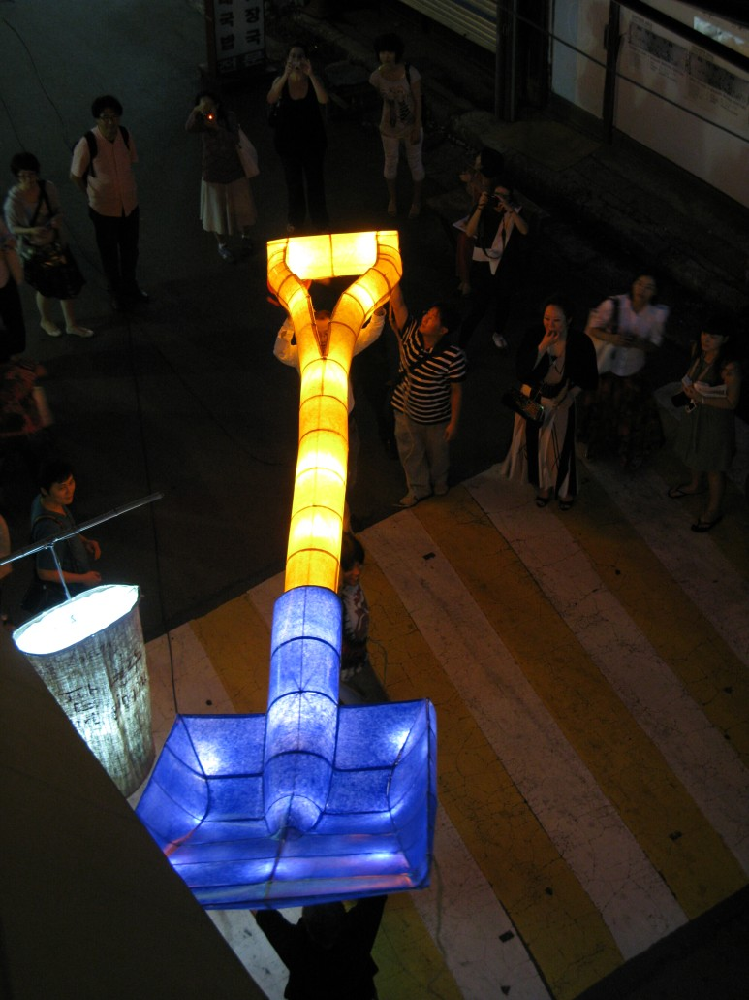
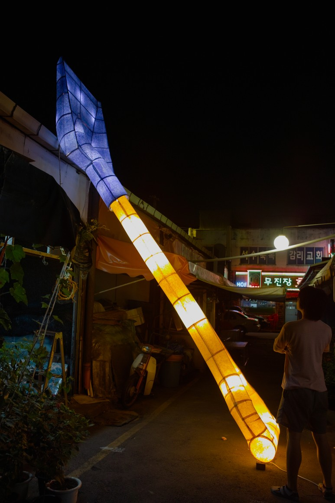
2009-07-13
sap2009.egloos.com 에서 옮김
"Babylon"
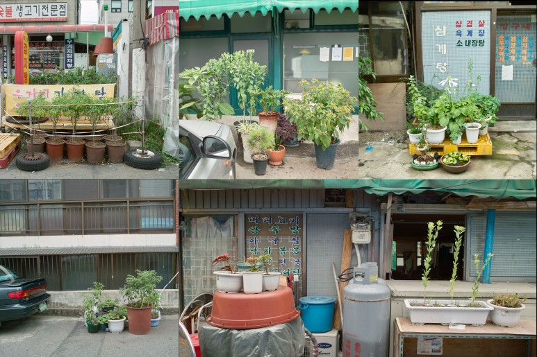
In front of their shop, each merchant has his own garden made of pots and plastic bags. I decided to create mine as a moving or suspended garden. I called it : Babylon
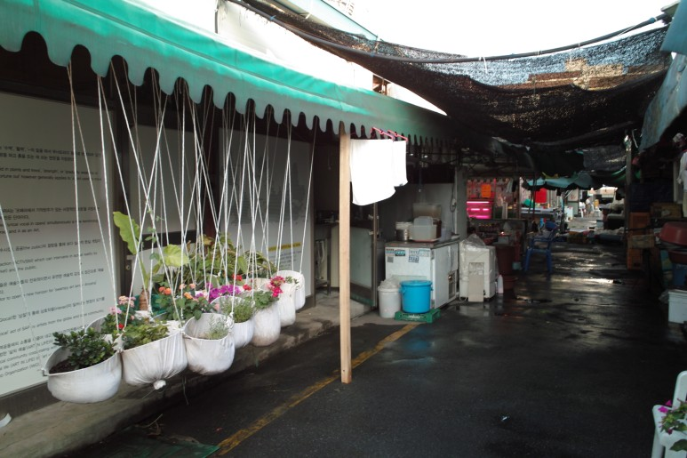
2008-08-09
sap2009.egloos.com